Mythic Proportion — 3D GraphRAG Second Brain
Greenfield rebuild of the LLM-Wiki second brain into a full Microsoft-GraphRAG-parity memory engine with a ~50k-node 3D interactive knowledge graph, a ground-up OKLCH design system, a local privacy layer, an agent layer, and an MCP memory server — built exclusively with FABLE-HARNESS primitives, Chrome-validated every phase, shipped as two separate public git repos.
Status markers:
[] idle ·
[wip] in progress ·
[x] done ·
[f] failed
Purpose
The current mythic-proportion app is a working, independently-verified (102 tests green) local "second brain": a Karpathy-style LLM-Wiki over Markdown + [[wikilinks]], with a SQLite hybrid-search sidecar (sqlite-vec + FTS5), a six-verb CLI, and a FastAPI + vanilla-JS web UI whose graph tab is a flat 2D wikilink map. The "LLM Wiki Second Brain with 3D Interactive Knowledge Graph" blueprint describes a far more capable target: a GraphRAG memory engine (entities, relationships, claims, communities, community reports; global/local/DRIFT retrieval) rendered through a professional 3D WebGL knowledge graph, with an agent layer and an MCP interface so the brain is a memory substrate for external coding agents.
This plan closes that gap as a full greenfield rebuild to a course-corrected target (Vite + React + React Three Fiber on the existing Python/FastAPI core; sqlite-vec, not Neo4j/Qdrant; custom orchestration + optional PydanticAI, not LangGraph), migrating all existing data across behind an explicit behavior-parity gate, and adding a local privacy layer the blueprint never contemplated. The intended outcome: a private, offline-capable, visually premium knowledge graph that both a human and an agent can read and write — delivered incrementally, verified live in Chrome at every phase, and published as two separate public repositories.
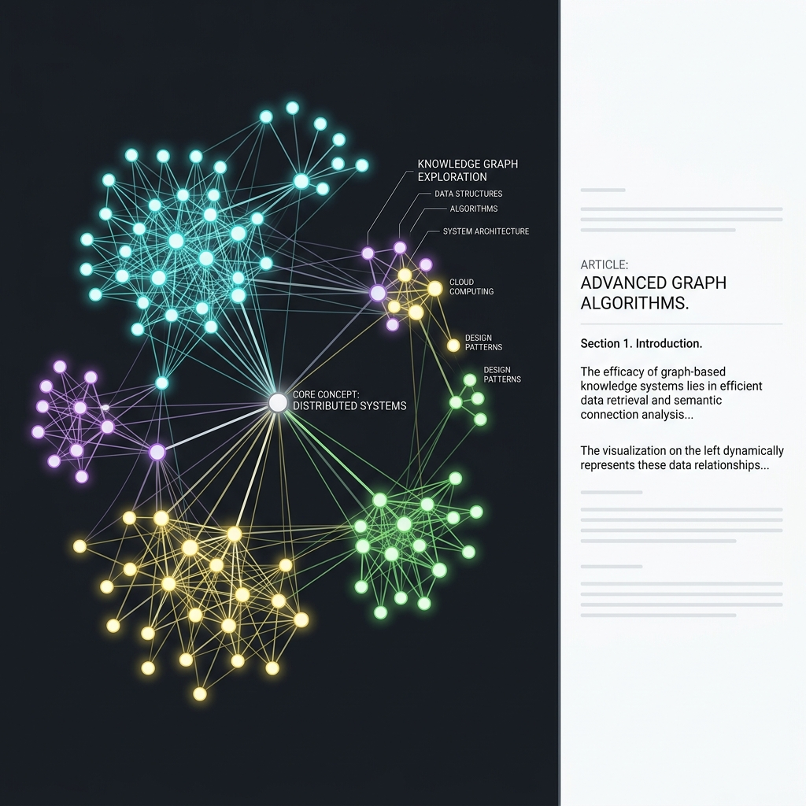
Problem
The built app and the blueprint diverge on almost every axis above the storage line, and the current design cannot simply grow into the target:
- Knowledge model is too thin. The schema is only
pages / pages_fts / page_vectors / meta. There are no entities, typed relationships, text units, claims, communities, or community reports — so there is no semantic graph to render richly, and no GraphRAG retrieval (global/local/DRIFT, spreading-activation) is possible. - The graph view is a flat 2D wikilink map.
api_graphemits page-nodes and resolved-wikilink edges onto a hand-rolled 2D canvas — no 3D, no instancing/LOD, no community structure, no scale headroom. - The frontend cannot carry a design system. 839 lines of imperative vanilla JS + 431 lines of hand-written CSS have no token layer, no component library, no build tooling — a ground-up design system is not maintainable there.
- No privacy story. Every note is sent verbatim to a cloud LLM (AuthHub→DeepSeek). For a personal second brain this is the wrong default; there is no PII redaction, no local-embedding guarantee, no fully-offline option.
- No agent layer, no interop. There is a single compile pass and a single query pass — no Extractor/Refiner/Librarian roles, and no MCP server, so no external agent can use the brain as memory.
- No version control at all. Neither
mythic-proportion/nor the enclosingFABLE-HARNESSis a git repository, so there is nowhere to branch, review, or publish work.
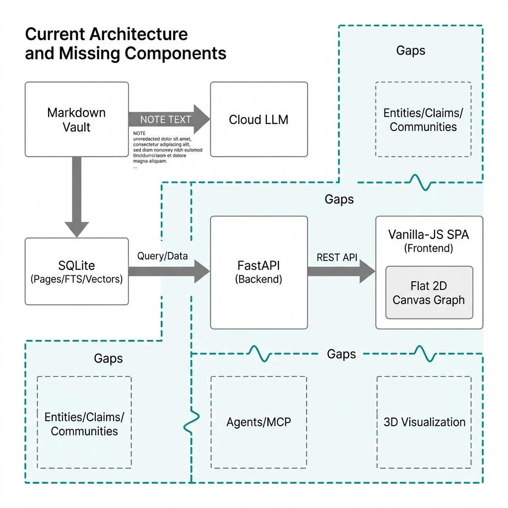
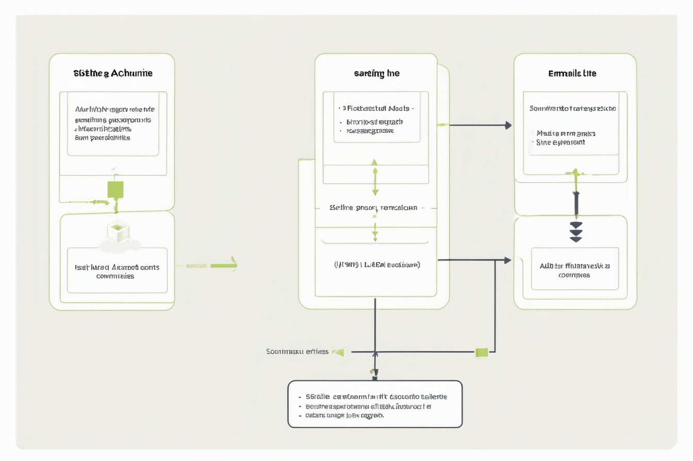
Solution
Rebuild to the course-corrected target architecture, preserving every current behavior behind a parity gate and migrating all data across. The target keeps the Python core's ethos (files-first, lazily-imported optional extras, every web route a thin wrapper over the same building blocks the CLI uses, prompted strict-JSON) while adding six new capability layers:
- GraphRAG data layer — new SQLite tables (
entities,relationships,text_units,text_unit_entities,claims,communities,community_reports) + siblingvec0vector tables, populated by prompted delimited-tuple extraction with anllm_cachefor idempotent incremental indexing. - Retrieval engine — graspologic hierarchical Leiden communities + LLM community reports; global (map-reduce), local (seed→recursive-CTE expand), DRIFT (primer→local loop), and query-aware spreading-activation traversal, all over sqlite-vec + FTS5.
- 3D frontend — Vite + React +
r3f-forcegraphlayout driving a customInstancedMesh2render layer (points-as-nodes, LOD, BVH frustum-cull, GPU picking) targeting ~50k nodes at 60fps, with a worker-frozen force layout, community hulls, hover/focus interactions, filters, a 2D fallback, and an accessible shadow-DOM. - Design system — three-tier OKLCH CSS-variable tokens (incl. a
--graph-*family read straight intoTHREE.Color), shadcn/ui components, a Cmd+K command palette spine, motion tokens, light/dark. - Local privacy layer — Presidio + the OpenAI Privacy Filter for redact→(cloud or local)→rehydrate;
bge-small-en-v1.5local embeddings as default; an optional fully-offline Ollama/Qwen2.5 provider selected by a per-vaultlocal: trueflag. - Agent + interop layers — Extractor / Refiner / Librarian agents on a lean custom orchestrator (optional PydanticAI
[agents]extra), and a FastMCP stdio server exposing read tools by default with opt-in transactional writes and a JSONL audit log.
All of it built by FABLE-HARNESS typed producers (engineer, designer, design-system-curator, security-reviewer), confirmed by verifier, and validated live in Chrome each phase — never Hydra, pair-programmer, smith, or eights.

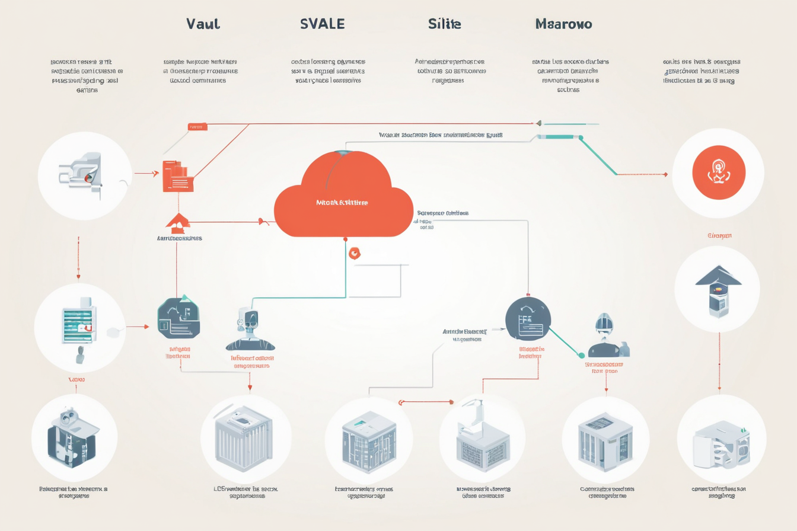
Relevant files
Existing
mythic-proportion/pyproject.toml— packagemythic-proportion(modulemythic_proportion), console scriptmythic, extrasingest/embeddings/llm/authhub/watch/web/dev; gainsgraphrag/agents/privacy/local/mcpextras + aweb/frontend workspace.src/mythic_proportion/index/schema.sql— extended with the GraphRAG tables +llm_cache; existingpages/pages_fts/page_vectors/metapreserved.src/mythic_proportion/index/{store.py,retrieve.py,embeddings.py}—IndexStoregrows GraphRAG CRUD + query modes;get_embedderdefault flips tobge-small-en-v1.5(HashEmbedder stays the zero-dep fallback).src/mythic_proportion/compile/*— compile pipeline feeds the new extraction stage; the delimited-tuple parser lives beside it.src/mythic_proportion/llm/authhub.py— provider layer; gains anollama.pysibling and a provider selector honoringlocal: true.src/mythic_proportion/web/app.py— the route contract (/api/pages|page|search|query|graph|ingest|upload|lint|config|models) is the parity gate; extended, never broken; static mount now serves the Vite build.src/mythic_proportion/web/static/*— retired at cutover (P10), replaced by the Vite/R3F build output.src/mythic_proportion/cli/app.py— the six verbs (init/ingest/query/lint/watch/serve) are parity-locked; a seventh (mcp) is added in P8.specs/ROADMAP-BRIEF.md— the authoritative grounding brief this plan executes.
New
src/mythic_proportion/graph/— GraphRAG package:extract.py(entities/relationships),claims.py,tuples.py(delimited-tuple parser + repair),communities.py(graspologic Leiden),reports.py(community-report generation),query/{global,local,drift,activation}.py,cache.py(llm_cache),migrate.py(one-shot backfill).src/mythic_proportion/privacy/—redact.py(Presidio + OpenAI-Privacy-Filter recognizer), reversible rehydrate map.src/mythic_proportion/agents/—extractor.py,refiner.py,librarian.py, shared orchestrator (optional PydanticAI binding).src/mythic_proportion/mcp/— FastMCP server (server.py), tool bindings, JSONL audit.web/— Vite + React + R3F frontend workspace:package.json,vite.config.ts,src/tokens/(OKLCH +--graph-*),src/components/(shadcn/ui),src/graph/(r3f-forcegraph + InstancedMesh2 + worker),src/palette/(Cmd+K),src/views/(Wiki/Search/Ask/Graph/Ingest/Lint/Settings), 2D fallback + a11y DOM. Build output lands in the package'sweb/static/served by FastAPI.tools/comfy_gen.py— optional localhost-only ComfyUI client (design/graph assets, plan diagrams).tests/— new suites for graph extraction, query modes, migration parity, privacy round-trip, MCP tools; Playwright/Chrome E2E specs per phase.H:\FABLE-HARNESS\.gitignore+H:\FABLE-HARNESS\README.md— excludesmythic-proportion/, links it as a sibling repo.mythic-proportion/README.md,.gitignore— repo hygiene for the standalone public repo.
Implementation phases
Phase 0 — Dual-repo git + greenfield scaffold [x]
Stand up version control and the greenfield skeleton. Two separate public repositories: mythic-proportion/ and the enclosing H:\FABLE-HARNESS. FABLE-HARNESS .gitignore excludes mythic-proportion/ so the trees never nest; a README link references it as a sibling. Scaffold the target layout (Python sub-packages + a web/ Vite workspace served by FastAPI) on a feat/3d-graphrag branch off mythic-proportion's main. Freeze the behavior-parity checklist as the acceptance contract for P2.
Tasks
[]git initinmythic-proportion/; add.gitignore(venv, caches,.coverage,tmpvault*,web/node_modules,web/dist); commit current verified state as the baseline.[]git initinH:\FABLE-HARNESS; add.gitignoreexcludingmythic-proportion/,.fable/, caches; add a README section linking the mythic-proportion sibling repo; commit.[]Confirm remote host + repo names with the user, then create both public remotes and push each to its ownmain(outward/publishing action — gated on that confirmation).[]Branchfeat/3d-graphragin mythic-proportion; all greenfield work lands here until the P10 parity merge.[]Scaffold Python sub-packages (graph/ privacy/ agents/ mcp/) as empty importable modules; add new extras topyproject.toml(declared now, dependencies added per-phase).[]Scaffold theweb/Vite + React + TypeScript workspace (React Three Fiber, drei, shadcn/ui deps); wire the build output into the FastAPI static mount; add a placeholder route that renders "hello".[]Authorspecs/parity-checklist.md: every CLI verb, every web route, lint rules, ingest fast-path, hybrid-search behavior — the frozen contract P2 must satisfy.
Testing strategy — loop until every check passes before advancing
[]git statusclean in both repos; both remotes reachable; bothmainbranches pushed; FABLE-HARNESS tree does not trackmythic-proportion/.[]pip install -e '.[dev,web]'succeeds; existingpytest(102 tests) still green on the branch.[]cd web && npm install && npm run buildsucceeds;mythic serveserves the placeholder build.[]Chrome validation:browser-validatorloadshttp://127.0.0.1:8765/, confirms the scaffold renders with zero console/network errors.
If a check cannot be made to pass after reasonable effort, mark the phase
[f] and record why in Notes rather than looping forever.
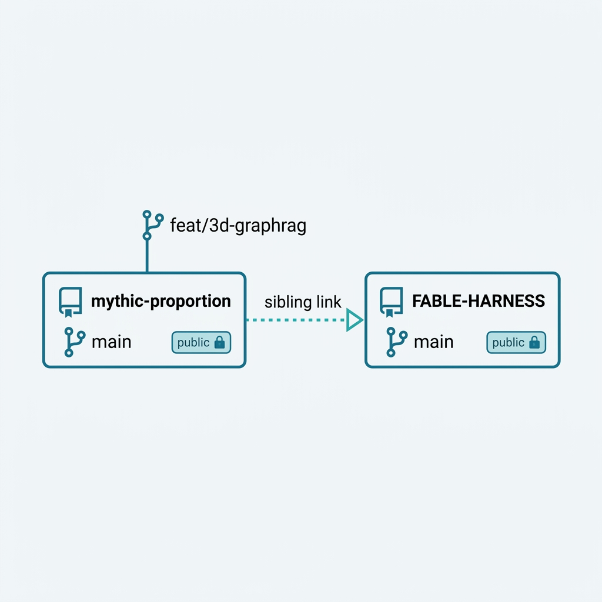
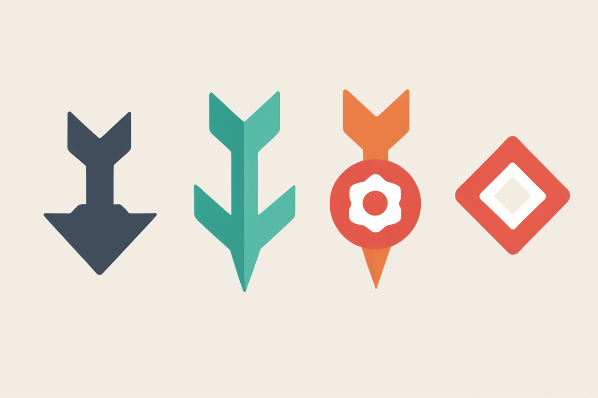
Phase 1 — Design-system foundation [x]
Build the ground-up design system before feature UI, so every later view consumes tokens rather than hard-coded values. Three-tier OKLCH CSS variables (primitive → semantic → component) including a dedicated --graph-* family that the 3D scene will read at runtime; shadcn/ui components (Base UI or Radix primitives); a Cmd+K command-palette navigation spine; motion tokens; light/dark theming. Dispatch designer + design-system-curator for the token/component specs, engineer to implement.
Tasks
[]Author the token set: OKLCH color primitives, semantic tokens (--color-text-*, surfaces, accent), 4px spacing scale, type scale, radii, elevation, and a categorical OKLCH community ramp.[]Define the--graph-*family (--graph-node-<type>,--graph-edge,--graph-edge-active,--graph-community-1..N,--graph-hull-fill,--graph-glow) + a runtime helper that reads them intoTHREE.Colorand re-reads on theme change.[]Motion tokens: durations (instant/fast/base/slow) + easings (standard/out/emphasized); all animation gated onprefers-reduced-motion.[]Install shadcn/ui; build the app shell (header, tab nav, theme toggle, panels) + core primitives (button, input, dialog, combobox, tooltip).[]Cmd+K command palette as the primary nav spine (fuzzy combobox: switch tab, jump-to-page, run Ask, open Ingest); keyboard-first focus order.[]A living tokens/components preview route (/#/design) for visual + a11y review.
Testing strategy — loop until every check passes before advancing
[]Token contrast audit: 4.5:1 body / 3:1 large+UI in both light and dark.[]npm run build+ typecheck clean; component unit tests pass.[]Chrome validation: theme toggle flips light/dark with no flash; Cmd+K opens/filters/executes; keyboard-only nav reaches every control; reduced-motion honored; zero console errors.[]design-system-curatorsign-off that--graph-*tokens resolve intoTHREE.Colorin a throwaway R3F cube.
If a check cannot be made to pass after reasonable effort, mark the phase
[f] and record why in Notes rather than looping forever.
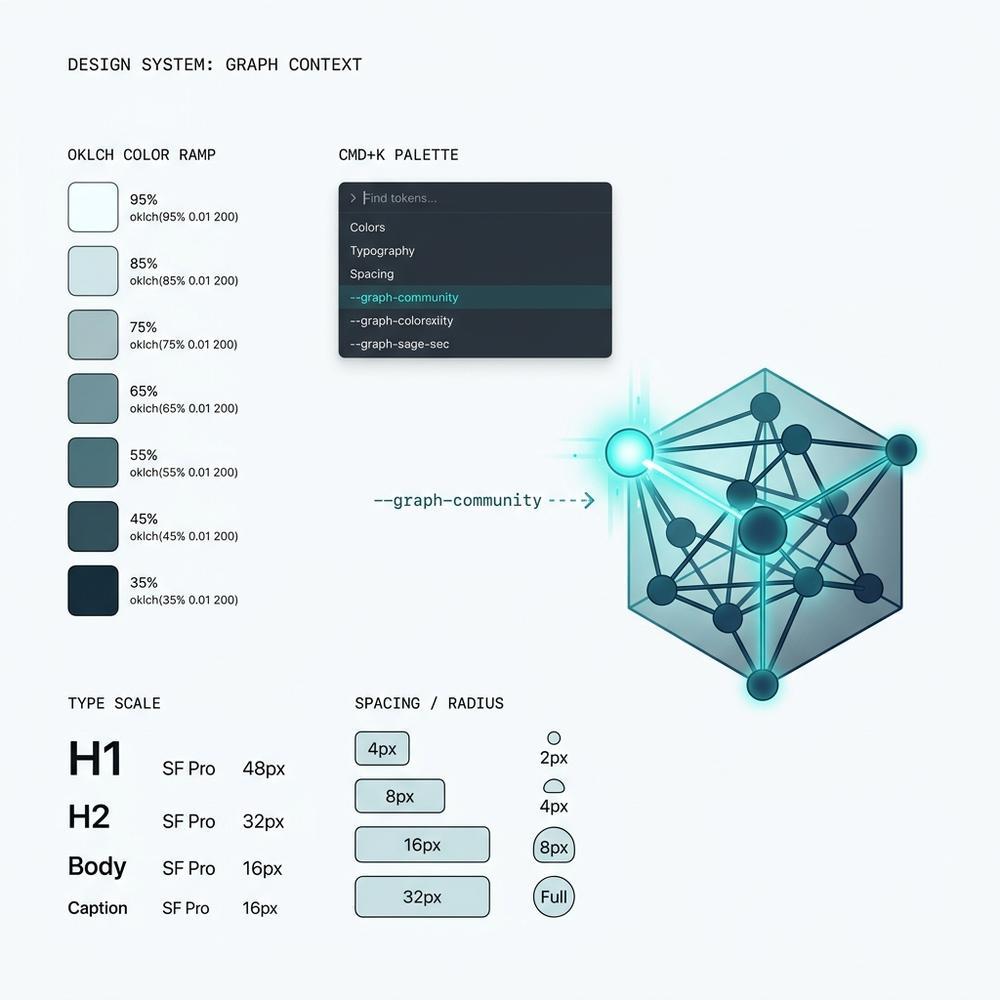
Phase 2 — Core rebuild + data migration + parity gate []
Re-establish the full existing feature set (ingest/compile/index/query/lint/watch/serve) on the clean greenfield structure, then migrate the existing vault + SQLite index across, and prove behavior parity against the P0 checklist before anything new is added. This is the riskiest phase of a greenfield rebuild — it exists to guarantee nothing the 102-test app does is silently lost.
Tasks
[]Port the Python core modules into the greenfield layout; keep every public entry point (ingest_drop,compile_source,IndexStore/hybrid_search,answer_query,lint_vault/lint_fix) intact.[]Re-wire the FastAPI routes as thin wrappers over those building blocks (the no-drift invariant); rebuild the seven views (Wiki/Search/Ask/Graph/Ingest/Lint/Settings) in React on the P1 design system — Graph tab temporarily uses the existing 2D data shape.[]Migration: one-shot re-ingest/re-index of the existing vault into the new store; verify page/search/query outputs match the legacy app on a fixture vault.[]Port the full existing test suite; add migration parity tests (legacy-vs-new outputs on fixtures).
Testing strategy — loop until every check passes before advancing
[]Every item onspecs/parity-checklist.mdpasses: all 6 CLI verbs, all 10 web routes, lint rules, ingest fast-path, hybrid-search ranking.[]ruff+mypyclean; fullpytest(ported 102 + new migration tests) green.[]Chrome validation:browser-validatordrives Wiki read, Search, Ask, Ingest (drop a file), Lint — each produces the same result class as the legacy UI; zero console/network errors.[]verifierre-derives parity from disk (diff outputs, test runner logs) without trusting the builder's self-report.
If a check cannot be made to pass after reasonable effort, mark the phase
[f] and record why in Notes rather than looping forever.
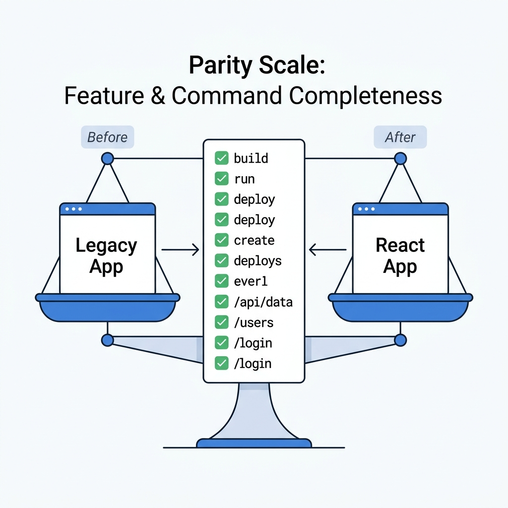
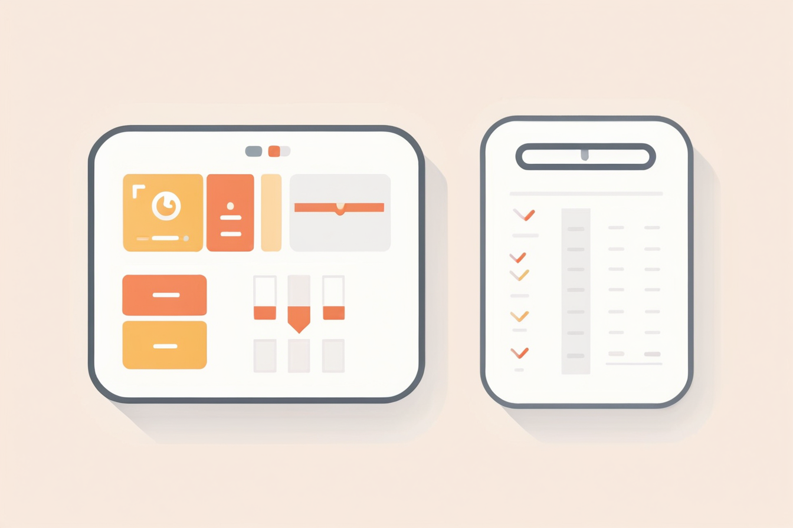
Phase 3 — GraphRAG data layer []
Add the semantic-graph substrate. New SQLite tables coexisting with pages/pages_fts/page_vectors; entity/relationship/claim extraction via GraphRAG-style prompted delimited tuples (more drift-robust than nested JSON) with a gleaning recall loop; an llm_cache keyed on sha256(prompt||model) for idempotent, incremental re-indexing. Borrow MS GraphRAG's MIT prompt text; hand-roll the orchestration. Dispatch data-modeler for the schema, engineer for extraction, security-reviewer for the prompt-injection surface of ingested content.
Tasks
[]Extendschema.sql:entities(UNIQUE(title,type)),relationships(source_id,target_id,type,weight)+ indices,text_units(page_id,chunk_index,text,content_hash),text_unit_entities,claims,communities,community_reports; siblingvec0tablesentity_vectors/report_vectors/text_unit_vectorsat the active embedder dim.[]Chunk pages into text units (heading/semantic boundaries) with content hashes; embed locally intotext_unit_vectors.[]Extraction: adapt MSextract_graph+summarize_descriptions+extract_claimsprompts to delimited-tuple output; parser with balanced-scan + one repair round-trip + skip-not-abort; title normalization for dedup; a constrainedtypeenum.[]llm_cachetable + read-through wrapper on every extraction call; incremental re-index (only changed chunk hashes re-extract; ref-count entity provenance on delete).[]Extend/api/graphto emit entity/relationship nodes+edges (typed, weighted) alongside the wikilink view; keep the legacy shape available.
Testing strategy — loop until every check passes before advancing
[]Extraction unit tests on fixtures (deterministic mock provider): known text → expected entities/relationships/claims; parser survives malformed/fenced/truncated tuples.[]Idempotency: re-index unchanged vault → zero new LLM calls (cache hits), stable entity IDs; change one file → only its units re-extract.[]ruff/mypy/pytestgreen;[graphrag]extra imports lazily (base install unaffected).[]Chrome validation: Graph tab (still 2D) now shows semantic entity nodes/edges from a real ingested doc; zero console errors.
If a check cannot be made to pass after reasonable effort, mark the phase
[f] and record why in Notes rather than looping forever.
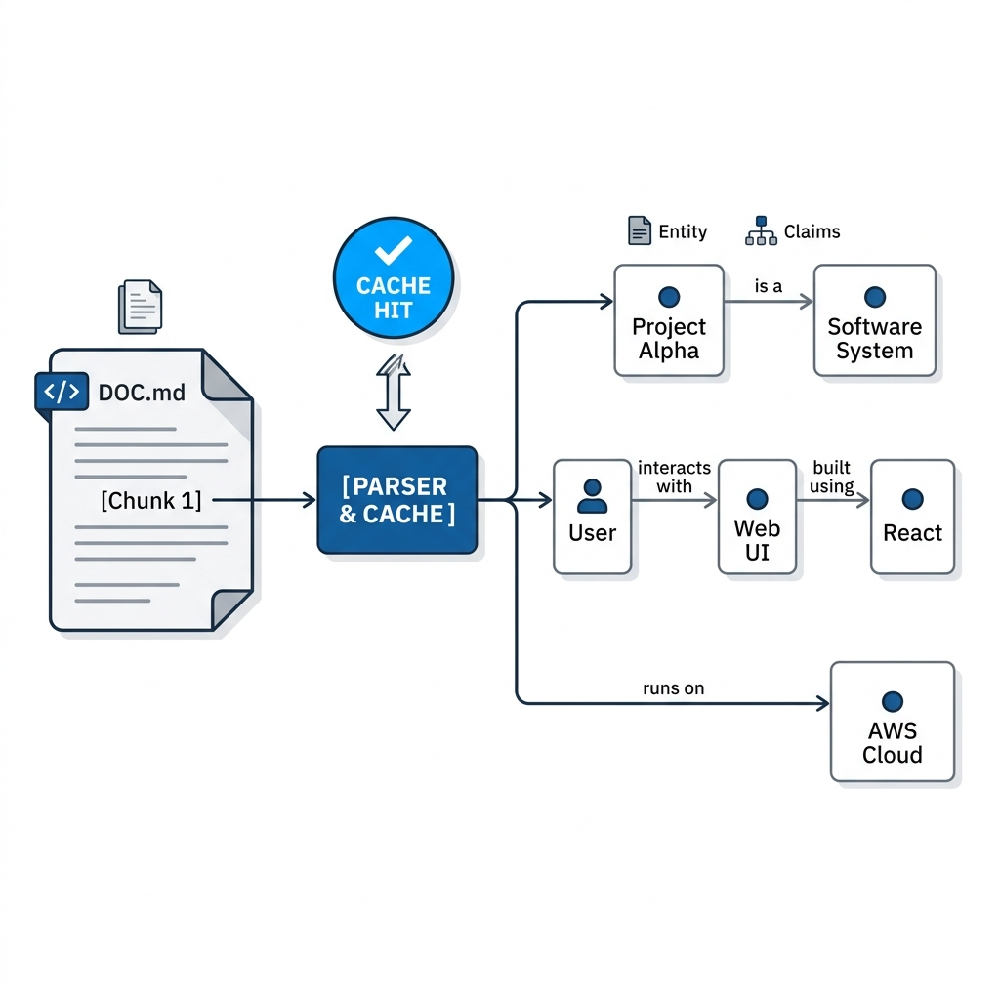
Phase 4 — Communities + retrieval modes []
Turn the graph into a retrieval engine. graspologic hierarchical Leiden clustering (pinned seed for stable IDs) into communities; LLM-written community_reports (cached by community content-hash); and the four GraphRAG query modes plus query-aware spreading-activation, all expressed over sqlite-vec + FTS5 + recursive CTEs. Wire the Ask view to choose a mode. Dispatch security-reviewer for the concurrency/data-integrity of graph writes during re-cluster.
Tasks
[]communities.py: build a weighted edge-list fromrelationships, callhierarchical_leiden, persistlevel/cluster/parent_cluster; recompute whole-graph each index run.[]reports.py: bottom-up community report generation, embedded intoreport_vectors, cached by community hash.[]Query modes: global (map-reduce over reports), local (vec seed → recursive-CTE neighbor expand → text_units/claims/reports → token-budget rank), DRIFT (primer over reports → per-follow-up local loop), spreading-activation (weighted scored BFS: activation ×weight× decay, FTS5∪vec seeds, threshold).[]answer_querygains amodeparameter + auto-select heuristic;/api/queryand the Ask view expose mode choice.
Testing strategy — loop until every check passes before advancing
[]Deterministic tests: local expansion returns the correct N-hop neighborhood; spreading-activation ranks a planted multi-hop answer above a lexical distractor; global map-reduce aggregates report points.[]Re-cluster is transactional (no torn reads under a concurrent query); stable community IDs across identical re-runs.[]Retrieval-quality regression: new modes ≥ legacy hybrid search on a labeled fixture set.[]Chrome validation: Ask tab returns cited answers per mode; switching modes changes retrieved context visibly; zero console errors.
If a check cannot be made to pass after reasonable effort, mark the phase
[f] and record why in Notes rather than looping forever.
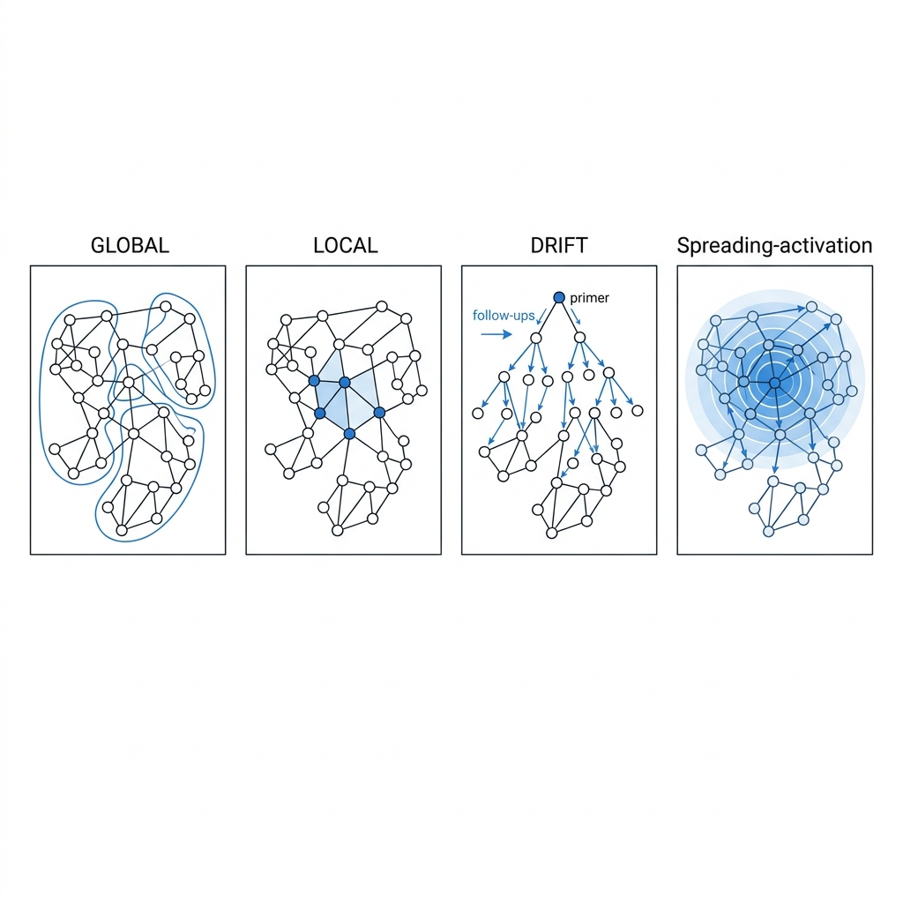
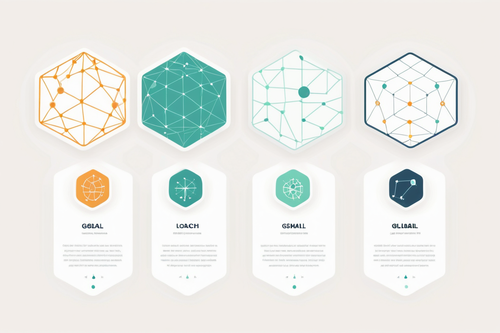
Phase 5 — 3D graph frontend (~50k target) []
The centerpiece. r3f-forcegraph drives the force simulation and data plumbing (R3F keeps the render loop via tickFrame()), but nodes render through a custom InstancedMesh2 layer (points-as-nodes, LOD tiers, per-instance BVH frustum-culling, GPU picking) — designed for ~50k nodes at 60fps from day one, not retrofitted. Worker-frozen layout, batched line edges with degree-based culling, SDF labels only for hovered/selected/high-degree nodes, community hulls, hover-neighbor highlight+fade, eased camera focus, filters, progressive disclosure, a 2D fallback mode, and an accessible parallel shadow-DOM.
Tasks
[]Integrater3f-forcegraph; rund3-force-3din a Web Worker;warmupTicks→ freeze ononEngineStop; re-heat only on data change/drag.[]Custom node layer on@three.ez/instanced-mesh(InstancedMesh2): points/quads, LOD, BVH cull; degree/centrality-scaled size; community color from--graph-*tokens.[]Edges as one batchedLineSegmentswith distance/degree fade + overview culling; community convex-hull volumes (low alpha, few).[]Picking via GPU pick buffer on throttled pointer events (never per-frame raycast); hover → raise node+1-hop+edges, fade rest to ~0.1; click → eased camera focus (emphasized easing) + docked reading pane loads the node's page.[]Filters (type/tag/time/community); progressive disclosure (start 20–50 nodes, expand on demand); Cmd+K jump-to-node refocuses the graph.[]2D fallback mode + a11y: visually-hidden keyboard-navigable node/neighbor tree + links data-table mirroring the graph, announced selection; honor reduced-motion.[]NeversetStateinuseFrame(mutate matrices/uniforms via refs); lazy-load the graph route;PerformanceMonitor-driven adaptive DPR.
Testing strategy — loop until every check passes before advancing
[]Synthetic-graph perf harness (10k and ~50k nodes): sustained ≥60fps (10k) / interactive (~50k with points+culling) on the target mid GPU, measured viar3f-perf/PerformanceMonitor.[]Interaction correctness: hover highlight, click-focus, filter, expand, Cmd+K jump, 2D toggle all behave; nosetState-in-loop regressions.[]a11y: keyboard reaches/selects nodes via the shadow-DOM; screen-reader announces selection; reduced-motion disables auto-animation.[]Chrome validation:browser-validator+visual-regression-runnerdrive the graph at scale, capture FPS + before/after frames, confirm zero console/WebGL errors.
If a check cannot be made to pass after reasonable effort, mark the phase
[f] and record why in Notes rather than looping forever.
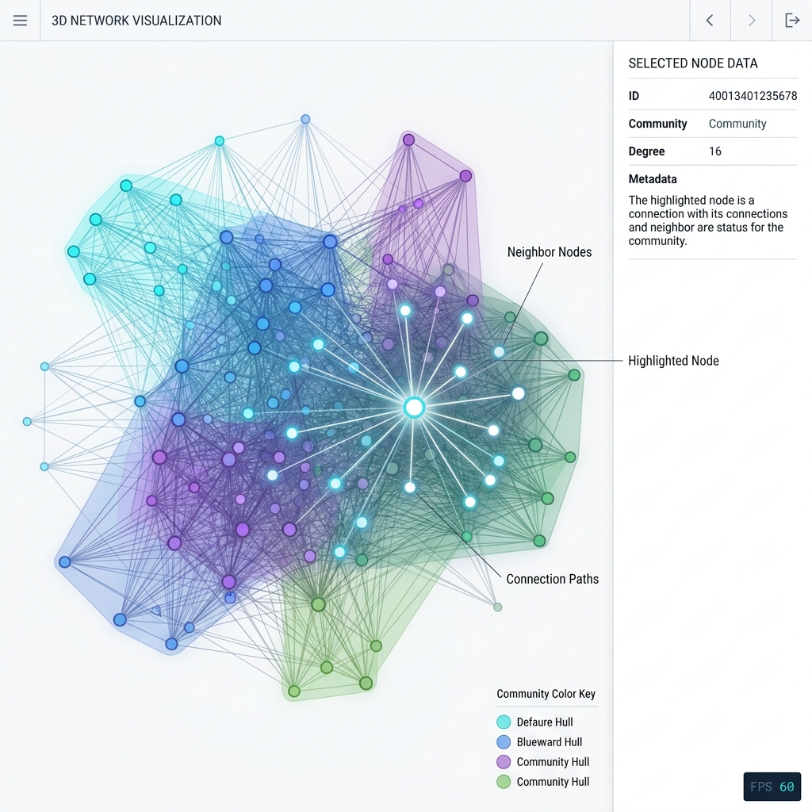
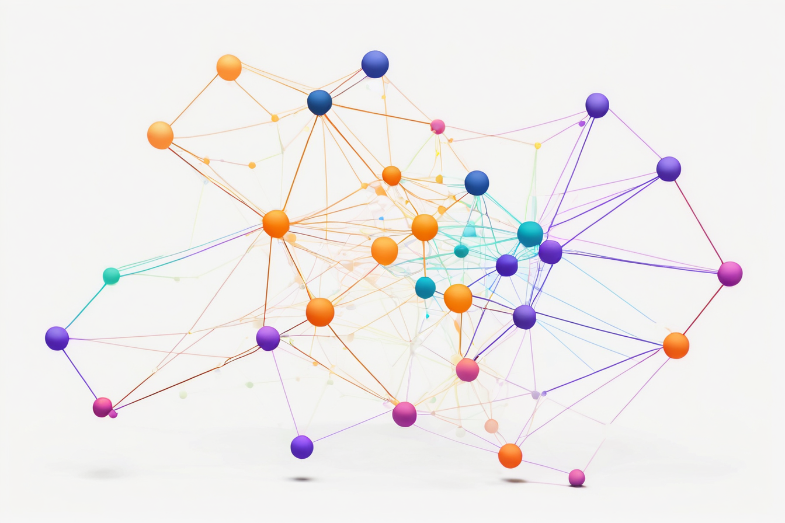
Phase 6 — Local privacy layer []
Make privacy the default for a personal second brain. Redact PII locally before any content reaches a cloud LLM (Microsoft Presidio as the framework, the OpenAI Privacy Filter wired as a custom recognizer), rehydrate PII into responses via Presidio's reversible map; flip default embeddings to local bge-small-en-v1.5 (keep HashEmbedder fallback); add an optional fully-offline Ollama/Qwen2.5 provider selected by a per-vault local: true flag. Dispatch security-reviewer + ai-controls-author for the data-classification and redaction-completeness review.
Tasks
[]privacy/redact.py: Presidio analyzer+anonymizer, OpenAI-Privacy-Filter recognizer, reversible rehydrate map; a redact→LLM→rehydrate wrapper around the provider layer.[privacy]extra (lazy torch/presidio).[]Default embedder →bge-small-en-v1.5via fastembed ([embeddings]); chunks never leave the machine; re-embed migration.[]llm/ollama.py: OpenAI-compatible client atlocalhost:11434, Ollama structured-outputs (format=JSON Schema) for guaranteed-valid extraction JSON;[local]extra.[]Provider selector: per-vaultlocal: trueroutes compile/query/extraction entirely to Ollama (never cloud); Settings view exposes provider, model, redaction on/off, local mode.
Testing strategy — loop until every check passes before advancing
[]Redaction round-trip: seeded PII (emails/phones/names/secrets) is masked before the (mock) cloud call and correctly rehydrated in the answer; no raw PII in the outbound payload (asserted on captured request).[]local: truepath makes zero network calls to any non-localhost host (asserted); extraction still yields valid tuples/JSON via Ollama structured outputs.[]Embeddings default is local; base install (no extras) still imports and runs BM25-only.[]Chrome validation: Settings toggles provider/local/redaction; an Ask with redaction on returns a coherent, PII-free-in-transit answer; zero console errors.
If a check cannot be made to pass after reasonable effort, mark the phase
[f] and record why in Notes rather than looping forever.
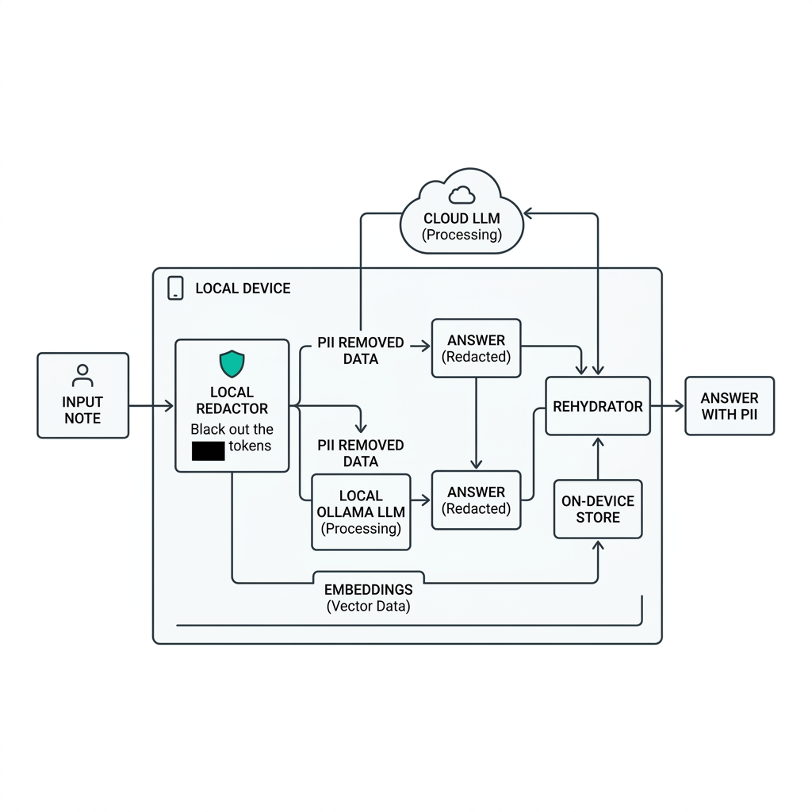
Phase 7 — Agent layer (Extractor / Refiner / Librarian) []
Formalize the three GraphRAG agent roles on a lean custom orchestrator (LangGraph deliberately skipped for core per research §6.4; optional PydanticAI [agents] extra for typed I/O + usage caps). Extractor ingests changed pages → graph upserts (reusing P3); Refiner runs a maintenance loop (dedup near-duplicate entities, normalize relationship types/weights, re-summarize) with a SQLite-backed resumable cursor; Librarian orchestrates hybrid retrieval mode-selection (reusing P4) and assembles ranked context bundles.
Tasks
[]agents/extractor.py— thin role over P3 extraction, triggered by ingest/watch.[]agents/refiner.py— maintenance loop: entity dedup (title similarity + shared neighbors), relationship normalization, community/report refresh; SQLite work-queue + cursor for resume; a confirmation gate before destructive merges.[]agents/librarian.py— mode-selection + context-bundle assembly (community → entities → text units → claims ordering) over P4.[]Optional PydanticAI binding behind[agents]; surface Refiner status + pending merges in the UI.
Testing strategy — loop until every check passes before advancing
[]Refiner dedup merges a planted near-duplicate pair and preserves detail; the confirmation gate blocks unconfirmed merges; the loop resumes from its cursor after an interrupt.[]Librarian selects the expected mode per query class and emits a correctly-ordered bundle within the token budget.[]ruff/mypy/pytestgreen; base install works without[agents].[]Chrome validation: Refiner maintenance surfaced in the UI (pending merges list, run/confirm); zero console errors.
If a check cannot be made to pass after reasonable effort, mark the phase
[f] and record why in Notes rather than looping forever.
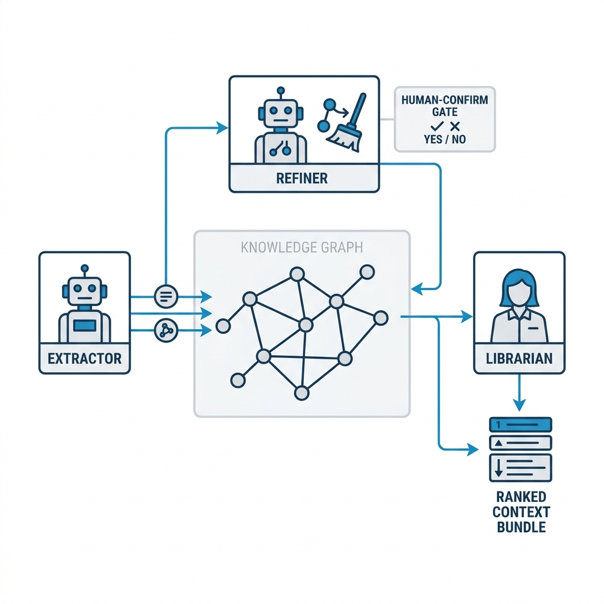
Phase 8 — MCP memory server []
Expose the brain as a memory substrate for external coding agents (a product feature of mythic-proportion — it does not violate the harness's own N8, which governs how the harness operates, not what this app ships). FastMCP over stdio; read tools always on; writes behind an explicit --read-write opt-in with transactional SQLite, schema-as-defense, per-tool rate/fan-out limits, and a JSONL audit log. Add a mythic mcp CLI verb. Dispatch security-reviewer (this is the security-keyword-flagged surface) + api-designer for the tool contracts.
Tasks
[]mcp/server.py(FastMCP): read toolssearch_graph,get_context_bundle(entity_id, depth),search_text_units; write toolsupsert_entity,add_text_unit(transactional, idempotent).[mcp]extra.[]Security:--read-onlydefault (writes unregistered), enum/branded-ID schemas, URL allow-lists, lower write rate limits, JSONL audit (tool, args-hash, ts, outcome).[]mythic mcpCLI verb (stdio; optional streamable-HTTP flag); documentclaude mcp add --transport stdio mythic -- python -m mythic_proportion.mcp --scope project.
Testing strategy — loop until every check passes before advancing
[]Tool contract tests: reads return correct shapes; writes are transactional (partial failure rolls back); read-only mode rejects writes; rate limits fire.[]Audit log records every call; schema validation rejects malformed args.[]Live validation: register the stdio server with a real Claude Code client (claude mcp add) and exercise a read + a gated write end-to-end.[]security-reviewersign-off on the read/write boundary;verifierconfirms from the audit log.
If a check cannot be made to pass after reasonable effort, mark the phase
[f] and record why in Notes rather than looping forever.
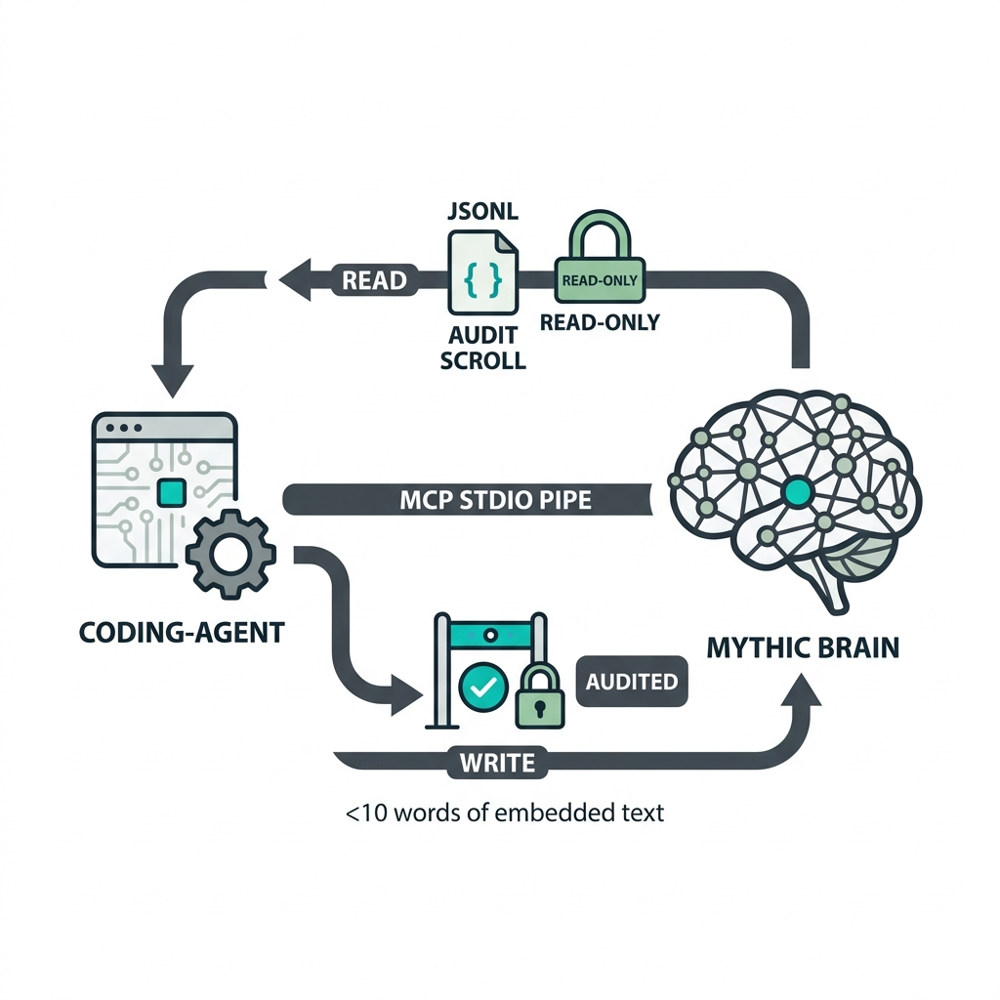
Phase 9 — ComfyUI asset pipeline (optional) []
Wire the local ComfyUI at H:\LocalAI to generate design + graph-visual assets (node/edge glyph textures, particle sprites, moodboards, and this plan's own figure PNGs) with no cloud spend. A small, optional, localhost-only helper that no-ops gracefully when the server is down.
Tasks
[]Verify the install: probeGET http://127.0.0.1:8188/system_stats+/object_info; confirm SDXL/Flux checkpoints and (optionally) LayerDiffuse / seamless-tiling / rembg nodes underH:\LocalAI.[]tools/comfy_gen.py(~80 LOC, stdliburllib+websocket-client): load an API-format workflow template with{{PLACEHOLDER}}slots → POST/prompt→ await/ws→ pull/view→ save intodesign-assets/<category>/; no-op if unreachable.[]Generate the design-system moodboards + graph node/edge textures; optionally the plan's figure PNGs (feedplan-images.ps1 extractoutput as prompts).
Testing strategy — loop until every check passes before advancing
[]Helper is a clean no-op (logged) when ComfyUI is offline — never blocks a build.[]When online: a parameterized prompt produces a transparent-PNG asset saved to the right folder; no non-localhost network calls.[]Chrome validation: a generated node texture renders correctly in the 3D graph; zero console errors.
If a check cannot be made to pass after reasonable effort, mark the phase
[f] and record why in Notes rather than looping forever.
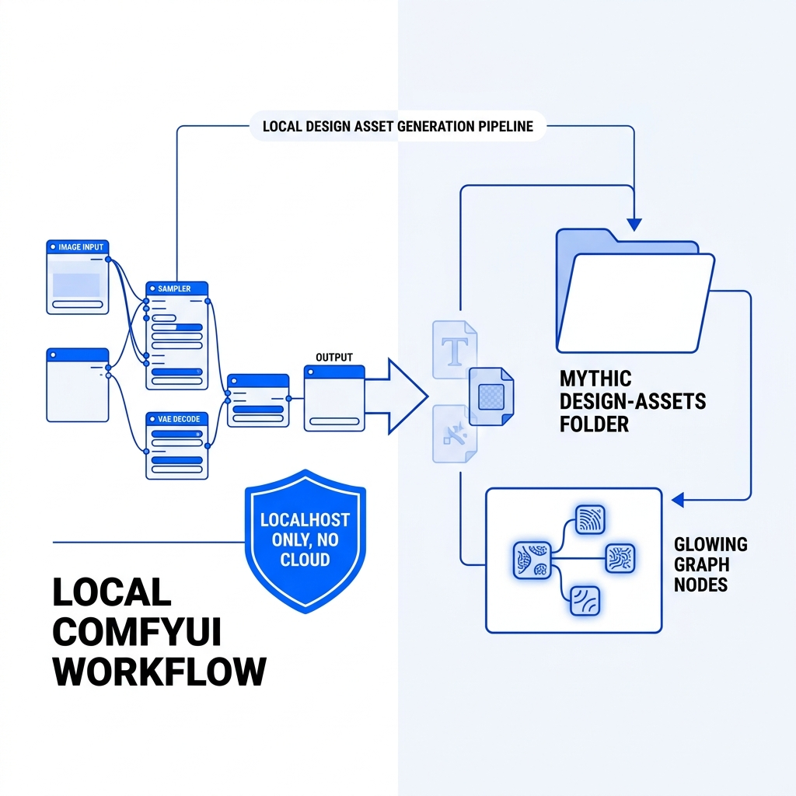
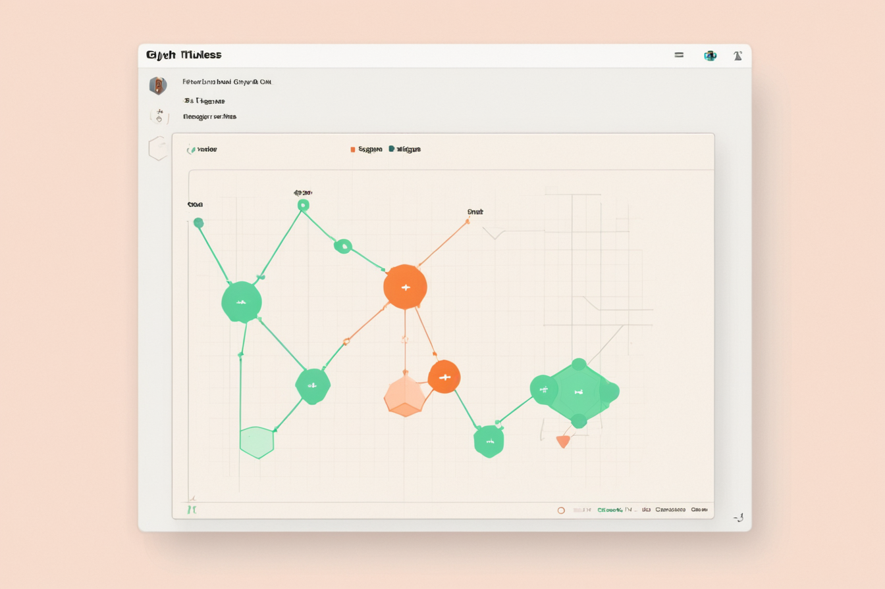
Phase 10 — Cutover, merge, publish []
Retire the legacy tree only after the full parity checklist and every phase's Chrome validation pass. Merge feat/3d-graphrag → main, tag a release, push both public repos, and finalize docs. This is the final gate; nothing is "done" until the global validation section below is all [x].
Tasks
[]Remove the retired vanilla-JSweb/static/*and any dead legacy modules; confirm nothing else imports them.[]UpdateREADME.md(both repos),docs/, and the FABLE-HARNESS sibling link; bump version; write the changelog (viadocs-author).[]Merge the feature branch tomain; tag; push both repos to their public remotes (confirm with the user immediately before the push).[]Run the missability/completion checklist;run-finalizer-style summary.
Testing strategy — loop until every check passes before advancing
[]Full global validation (below) green; parity checklist 100% satisfied.[]Chrome validation: a full end-to-end pass across all views on the mergedmainbuild; zero console/network errors.[]verifierre-derives the release state from disk (git log, test logs, build artifacts) independent of any builder self-report.
If a check cannot be made to pass after reasonable effort, mark the phase
[f] and record why in Notes rather than looping forever.
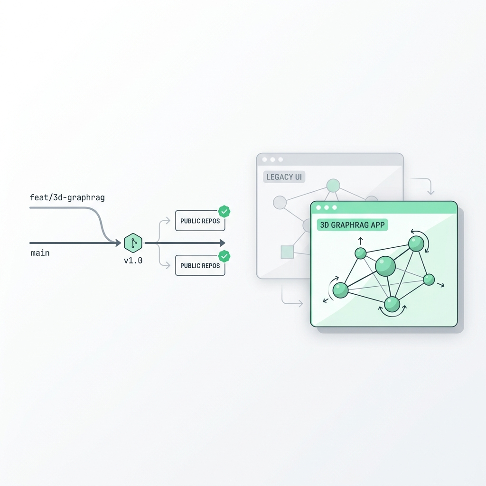
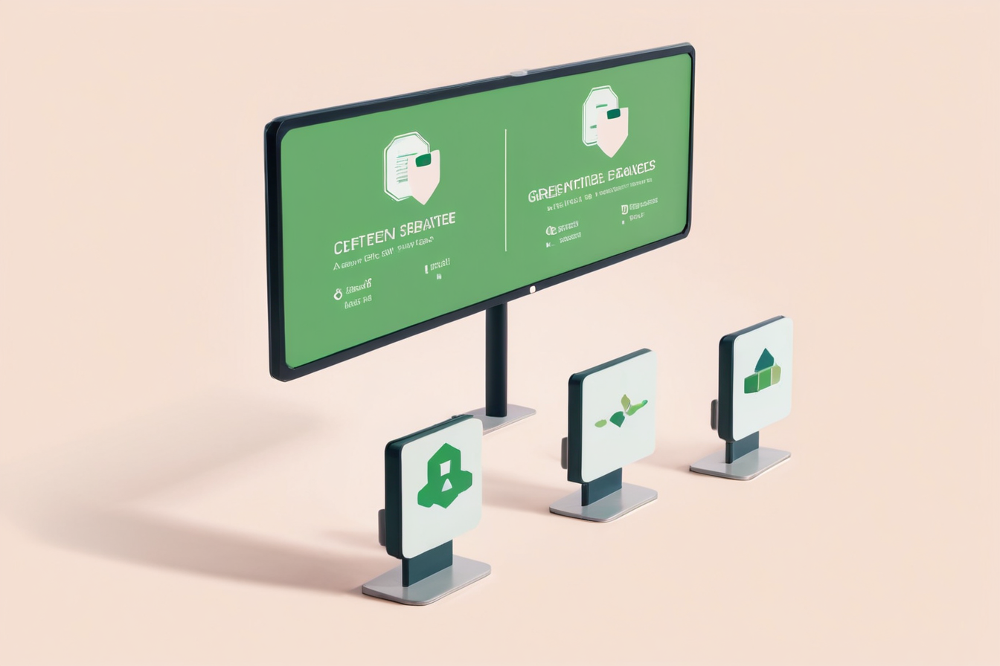
Global validation commands — final gate (run after all phases show [x])
[]cd mythic-proportion && ruff check . && mypy— lint + typecheck clean (Python).[]pytest— full suite (ported 102 + all new: extraction, query modes, migration parity, privacy round-trip, agents, MCP tools) green.[]cd web && npm run typecheck && npm run build && npm test— frontend typecheck, production build, component tests.[]Playwright/Chrome E2E across all seven views + the 3D graph at 10k and ~50k nodes — zero console/network/WebGL errors, FPS budget met.[]specs/parity-checklist.md— every legacy behavior satisfied on the greenfield build.[]Privacy assertion: outbound cloud payloads contain no raw PII;local: truemakes zero non-localhost calls.[]MCP:claude mcp addregistration + a read and a gated write exercised end-to-end; audit log intact.[]Base install (no extras) still imports and runs BM25-only; each extra imports lazily.[]Both repos:git statusclean,mainpushed, FABLE-HARNESS does not trackmythic-proportion/.
Same loop discipline as per-phase checks: nothing is done until every command here passes.
Questionables
- Assumption: Delivery is a full greenfield rebuild (not incremental strangler). — Why it matters: reshapes every phase and adds the P2 migration/parity gate. — Resolved:
[x]confirmed (user, 2026-07-11). - Assumption: "Greenfield to the blueprint" means the course-corrected target (Vite/R3F, sqlite-vec, no Neo4j/Qdrant/LangGraph), not the blueprint's literal stack. — Why it matters: a literal reading would undo the §3/§7 decisions. — Resolved:
[x]confirmed in brief §3.4; flagged to user. Reopen if the literal blueprint stack was actually intended. - Assumption: Graph performance target is ~50k nodes @ 60fps (points+LOD+BVH-cull+GPU-pick from day one). — Why it matters: sets the entire P5 rendering strategy. — Resolved:
[x]confirmed (user, 2026-07-11). - Assumption: Two separate public repos; pushing is an outward action the engineer performs in P0/P10 only after confirming remote host + names. — Why it matters: publishing is hard to reverse. — Resolved:
[x]confirmed (user, 2026-07-11); remote host/names still[]open (ask at P0). - Assumption: LangGraph skipped for core; optional PydanticAI
[agents]extra only. — Why it matters: dependency weight + lock-in vs. the lean ethos. — Resolved:[x]confirmed (research §6.4 + user workstream selection). - Assumption: MCP is read-only by default with opt-in transactional writes, stdio-first. — Why it matters: external-agent write safety. — Resolved:
[x]confirmed (research §6.4). - Assumption: The optional Ollama
local: trueprovider ships in P6 as opt-in (cloud DeepSeek remains the default provider). — Why it matters: whether "fully offline" is a launch guarantee or a selectable mode. — Resolved:[]open — confirm at P6. - Assumption: Data migration covers the real vault only;
tmpvault/andtmpvault2/are scratch and excluded/gitignored. — Why it matters: migration scope + repo hygiene. — Resolved:[]open — confirm at P2. - Assumption: Repo layout stays a single Python package (
mythic_proportionwith sub-modules) + a siblingweb/workspace, not a multi-package monorepo. — Why it matters: packaging + import ergonomics. — Resolved:[x]decided (keeps the current package/console-script/test layout intact; revisit only if a second distributable emerges).
Notes
Governance / build discipline. Every phase is built by FABLE-HARNESS typed producers only — engineer writes code, designer/design-system-curator own UX, data-modeler the schema, security-reviewer/ai-controls-author the trust surfaces, api-designer the contracts, docs-author the docs — with verifier independently confirming from disk and browser-validator/visual-regression-runner driving live Chrome. Reflexion ×1 per failing stage; escalate after 3 loops (N3). No Hydra, pair-programmer, smith, or eights (session constraint + project memory). Fable-5 (this plan) is planning only (N2) — never the build.
Course-corrections vs. the blueprint (carried from brief §7): Next.js → Vite+R3F served by FastAPI; 3d-force-graph → r3f-forcegraph + own InstancedMesh2; Qdrant/FAISS → sqlite-vec; Neo4j dropped; LangChain/LangGraph → custom + optional PydanticAI; MCP kept as a read-first product feature. New vs. blueprint: the entire privacy layer (P6).
Research provenance. Each capability rests on a cited research thread in specs/ROADMAP-BRIEF.md §6: privacy/embeddings/local-LLM (§6.1), GraphRAG-on-SQLite incl. schema/Leiden/query-modes/incremental (§6.2), 3D rendering at scale (§6.3), LangGraph+MCP (§6.4), ComfyUI automation (§6.5), design system (§6.6). Confidence note: the OpenAI Privacy Filter announcement page 403'd during research — its release-date/benchmark claims are corroborated via GitHub/HF + secondary coverage; validate the exact model card at P6.
Sequencing rationale. Design system (P1) precedes feature UI so nothing hard-codes style. Parity (P2) precedes new capability so the greenfield never regresses. Data layer (P3) precedes retrieval (P4) precedes the 3D view (P5) because each consumes the prior. Privacy (P6) can land any time after P2 but sits before the agent layer (P7) so agents inherit redaction. MCP (P8) is last of the core layers because it exposes everything beneath it. ComfyUI (P9) is optional and parallelizable. Cutover (P10) is the single retirement gate.
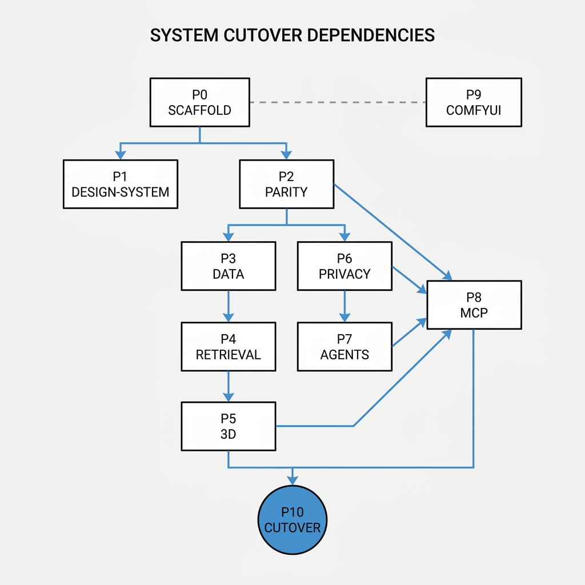
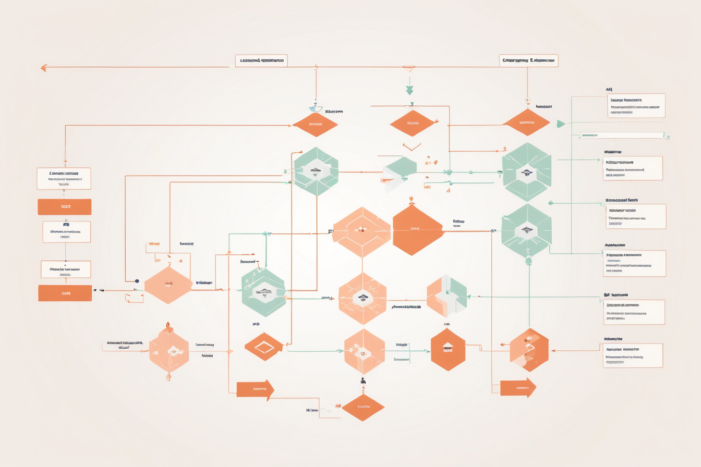
Amendments
1 amendment
Append-only post-execution change history (newest at the bottom). Never rewrite history — only add.
- 2026-07-11 — Phase 0 complete (direct build via typed
engineer+verifier). Dual git repos initialized;mythic-proportion(f15584cbaseline onmain,813b532scaffold onfeat/3d-graphrag) andFABLE-HARNESS(75a27c1onmain, gitignoringmythic-proportion/). Python sub-packages + declared-only extras (base unaffected);web/Vite+React+R3F workspace building tostatic_next/; FastAPI/appmount added (legacy/preserved — parity). 159 tests green (documented 102 was stale).verifierverdict: pass (7/7 re-derived from disk). Secret-scan clean. Both repos pushed public (github.com/lebobo88/mythic-proportion, github.com/lebobo88/fable-harness). Live Chrome validation of/app: scaffold renders, zero console errors. Decision: P1–P10 execute via the/runlifecycle (per user). - 2026-07-11 — Phase 1 complete (via
/runlifecycle, run20260711-141439-p1-design-system). 20 typed agents; taxonomy mapped to §4.4/§4.8/§4.10/§4.13; a cross-vendor Codex review ran on the designer stage. Implemented + committed9162a12onfeat/3d-graphrag: three-tier OKLCH tokens (primitives/semantic/components/graph/motion.css) incl. the--graph-*family + agraph-colors.tsTHREE.Color runtime bridge; motion tokens (reduced-motion-gated); shadcn-style primitives (Button/Input/Dialog/Combobox/Tooltip); app shell (Header/TabNav/ThemeToggle); Cmd+K command palette; light/dark theming;/designpreview route. Independent verification (from disk, not the run's self-report):tsc -b && vite buildcompiles (296 modules →static_next); vitest 21/21; Python 159/159; live Chrome: shell renders, dark/light toggle works, Cmd+K palette (NAVIGATE + PAGES) works, zero console errors. ⚠ Governance caveat: the run auto-reportedstatus: surfacedwith §4.8/§4.10/§4.13reject+ missabilityreject— a plumbing false-negative: the section producers didn't persist.fable/<run>/stages/*.json, soverifierfail-closed per N4 and missability mis-read "no artifacts" though artifacts + code clearly exist. Phase accepted on independent disk evidence. This stages-file gap will recur on P2–P10 unless addressed.